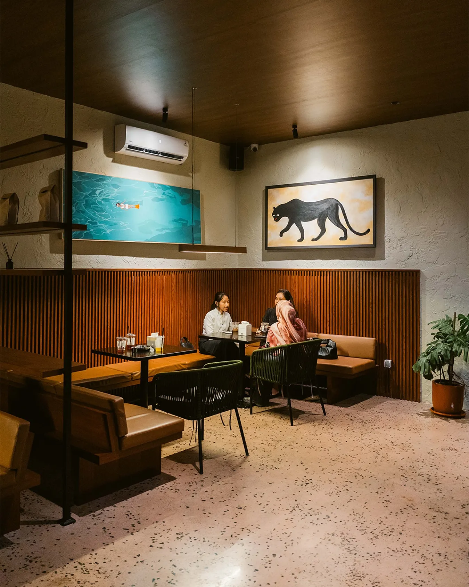
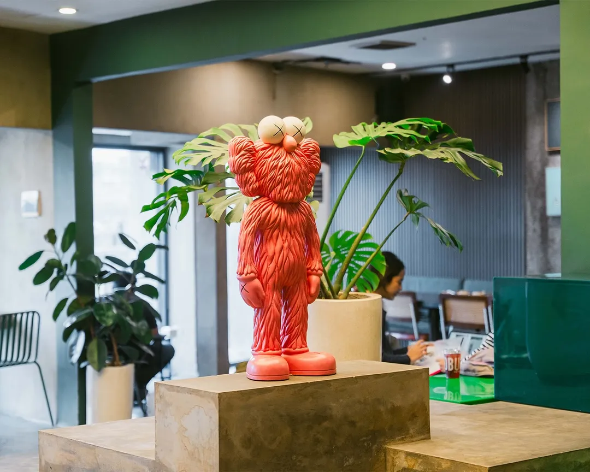
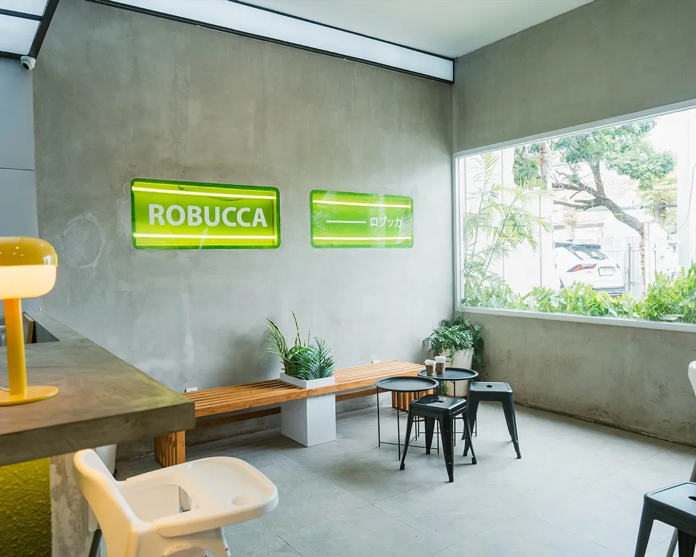
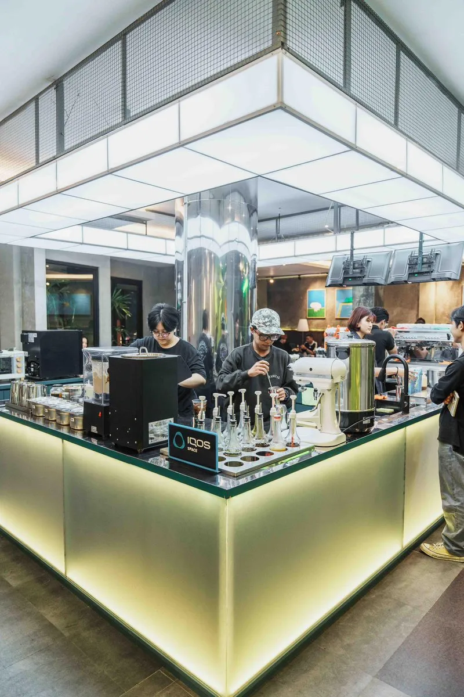

"Rough Spaces, Warm Moments"
Part of Rbc Group
Part of Rbc Group · Est. 2021 · Malang
Robucca lahir dari keyakinan sederhana: bahwa ruang yang dirancang dengan kejujuran akan menciptakan pengalaman yang tak terlupakan. Kami tidak percaya pada dekorasi yang berpura-pura. Kami percaya pada material yang jujur, ruang yang breathe (bernapas), dan kopi yang berbicara sendiri.
Konsep arsitektur brutalist menjadi pondasi visual kami. Kami membiarkan beton kasar terekspos, struktur baja terlihat telanjang, dan garis geometris memandu arah. Di tengah kekakuan industrial tersebut, kami menaruh kehangatan yang kontras: sofa Chesterfield berbahan kulit tua yang empuk, kayu alami, dan warna merah lacquered menyala.
Melalui kontras ini, kami ingin menciptakan ruang di mana percakapan mengalir tanpa sekat, gagasan baru lahir, dan kehangatan diseduh dalam setiap cangkir kopi. Di Robucca, Anda tidak hanya menikmati minuman, tetapi masuk ke dalam sebuah pernyataan ruang.
"Bukan yang paling mewah. Tapi yang paling otentik."
Kami merayakan beton, kayu, dan baja tanpa menyembunyikannya di balik lapisan cat tebal. Kami menampilkan guratan semen, sambungan las, dan retakan alami kayu apa adanya. Tanpa kepura-puraan.
Di antara keras dan dinginnya semen ekspos, ada kehangatan yang mengalir dari setiap cangkir yang kami seduh. Kami membangun tempat di mana percakapan hidup, tawa dibagikan, dan hubungan dipererat.
Setiap sudut dipikirkan secara matang. Peletakan sofa, tinggi meja bar, pencahayaan temaram, hingga playlist yang diputar — setiap elemen memiliki alasan eksistensi untuk mendukung mood Anda.

Sofa Chesterfield kulit cokelat tua yang nyaman, memberikan sentuhan kehangatan klasik di tengah kerasnya concrete wall.

Patung merah ikonik yang megah, berdiri tegak sebagai kontras artistik berani terhadap abu-abu semen cor di area outdoor Robucca.

Sudut-sudut dengan detail beton ekspos yang berkarakter kuat, menegaskan konsep arsitektur brutalist modern yang jujur.

Meja bar semen cor mentah tebal yang menjadi pusat panggung penyeduhan kopi, tempat para barista meracik signature coffee Robucca.
Rbc Group adalah kelompok usaha kreatif yang berfokus membangun merek-merek F&B dengan identitas kuat, kejujuran rasa, dan rancangan ruang yang tak biasa. Robucca adalah ekspresi arsitektural brutalist perdana kami di kota Malang.
FOLLOW INSTAGRAM KAMI @ROBUCCA.ID